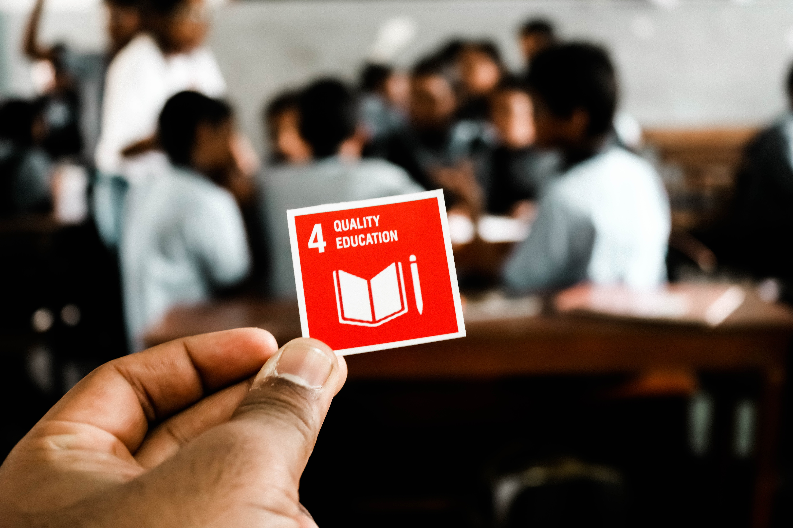

Goal 1. 빈곤퇴치 “모든 곳에서 모든 형태의 빈곤 종식”
- 1.1 2030년까지 현재 기준으로 하루에 $1.25 미만으로 살아가는 모든 사람을 위하여
모든 곳에서 절대 빈곤인구를 근절한다.
- 1.2 2030년까지, 국가별 정의에 따라 모든 측면에서 전 연령층의 남녀 및 아동의 빈곤
인구 비율을 최소한 절반으로 줄인다.
- 1.3 사회안전망을 포함하여 모두를 위하여 국가별로 적합한 사회적 보호체제 및 조치를
이행하고, 2030년까지 빈곤층과 취약계층에 대한 실질적 보장을 달성한다.
- 1.4 2030년까지 모든 남성과 여성, 특히 빈곤층과 취약계층이 경제적 자원에 대한
동등한 권리와 더불어 기초 공공서비스, 토지 및 기타 유형의 자산･유산･천연자원･ 적정 신기술, 소액금융을 포함한 금융서비스에 대한 오너십과 통제권에 대한
접근에 동등한 권리를 가질 것을 보장한다.
- 1.5 2030년까지 빈곤층과 취약계층의 회복력을 구축하고, 극한 기후에 관련된 사건
이나, 기타 경제·사회·환경적 충격 및 재난에 대한 노출과 취약성을 감소한다.
- 1.a 개도국, 특히 최빈개도국에게 모든 측면에서 빈곤을 종식하기 위한 프로그램과
정책을 이행할 수 있는 적절하고 예측 가능한 수단을 제공하기 위하여 개발
협력 증진 등을 통한 다양한 원천으로부터의 자원의 상당한 동원을 보장한다.
- 1.b 빈곤퇴치활동에 대한 투자증대가 이루어지도록 빈곤층 친화적이고 성(性) 인지적
개발전략을 기반으로, 국가별 지역별 국제적 차원에서의 견고한 정책프레임
워크를 형성한다.
